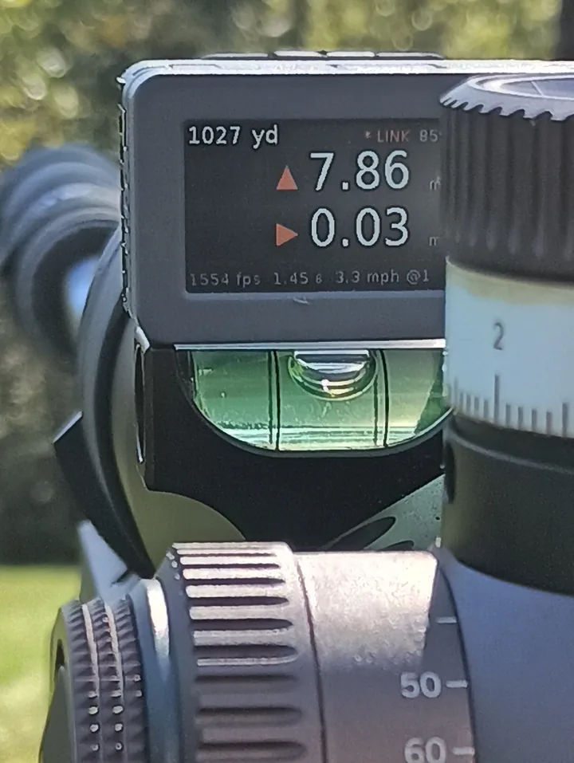

Not optional
- Elevation hold
- Windage hold
- Level
- Angle
Unique to Bullseye Ballistics is an optional companion device which can be mounted to your rifle or scope. It displays only the pertinent information you need available to you during a trigger press and is configurable to show/hide the info based on your preferences.
The External Display has built-in level and angle sensors and communicates with the Bullseye Ballistics app in real time.

YOU control the display. If you need the text to be larger or brighter, use the app to adjust it to your liking. You can also control the range/distance using the external display buttons.
The built-in level only appears if it detects the rifle is canted left or right and visually assists your re-leveling. Once re-leveled, it stops complaining and returns to displaying whatever information you selected to have displayed (time of flight, wind, hit probability, etc.). The holds always remain displayed regardless of the level status.
Tilt the rifle with the Cant slider. Past half a degree, the bottom line turns into a level bar until you are back to level. The shooting angle shows at the top of the display.
Load: 6.5 Creedmoor, Hornady 140 gr ELD Match, 2710 fps, G7 BC 0.326, 1.75 in sight height, 100 yd zero. Standard atmosphere (59°F, 29.92 inHg), 7 mph wind from 3 o'clock, right-hand twist. Holds come from a point-mass G7 trajectory solved along the line of sight with gravity split by the shooting angle, plus spin drift.